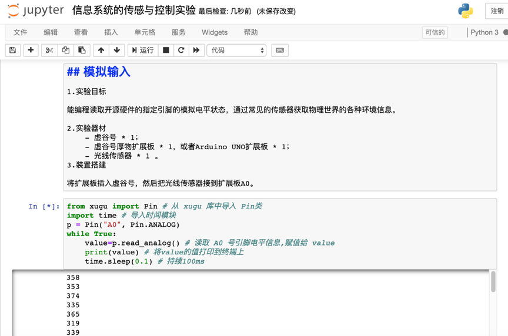
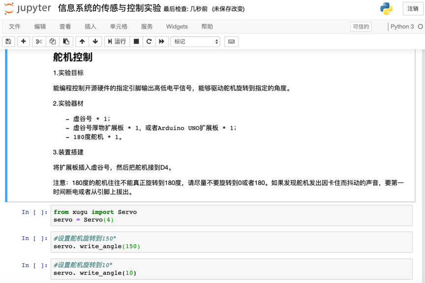

6. 基于虚谷号的“传感与控制”实验¶
案例编写：谢作如（温州）
信息系统要发挥作用，必须与外部世界进行联系。在基于传统网络的信息系统中。这种联系需要以人为中介进行——由人来理解和转换外部世界的需求，将其输入信息系统；同时，也是由人来理解信息系统的输出结果，然后去操作实物。比如图书管理系统，用户往往只能通过系统进行查询，了解某本书的出借情况以及存储位置，而系统却不能直接将书取出并放到用户手里。
随着物联网和人工智能的发展，信息系统逐渐可以通过传感技术自动获取外部信息(如温度、亮度、卡片、人脸等等)，也可以通过一定的机制实现对外部物体的直接控制。如地铁售票系统，不仅可以扫描手机上的二维码信息，完成自动扣款，还能够直接打开闸机。简而言之，新的信息系统不仅可以感知世界，还将实现控制万物。
6.1. 新课标中对“传感与控制”的要求¶
高中信息技术新课程中的必修模块2“信息系统与社会”，包括了“信息社会特征”“信息系统组成与应用”“信息安全与信息社会责任”三部分内容，强调学生利用信息系统解决问题的过程与方法，提升信息安全和社会责任意识。其中关于“传感与控制”部分的描述如下：
2.3 通过分析物联网应用实例，知道信息系统与外部世界的连接方式，了解常见的传感与控制机制。
为落实这一目标，课标的“教学提示”中指出，要利用信息技术实验室创设真实的问题情境，为学生提供从信息系统的设计规划到软硬件操作的实践体验机会，提高学生对信息系统 价值的认识以及利用信息系统解决问题的能力。如在信息技术实验室中，通过“远程控制系统”实验，指导学生合作或独立完成一个信息系统的硬件搭建和软件安装。
6.2. 实验准备工作¶
开源硬件“虚谷号”是一个板载单片机的迷你电脑，很适合用来完成高中信息技术课程中的“传感与控制”的实验。虚谷号的工作原理如图所示。

从图中可以看出，虚谷号其实由两个部分组成，对传感器和执行器的连接，都是通过板载的ATmega328 单片机（Arduino UNO同款芯片）来完成。Arduino相当于是一个“代理”，其和虚谷号的底层Linux系统之间的通讯借助标准的串口协议来连接。目前绝大多数的单片机与电脑连接都是用串口协议的，这方面的案例资源非常丰富，技术非常也很成熟。
为了帮助Python的初学者编写传感与控制方面的代码，虚谷号提供了名为“xugu”的Python库。这个库中有Pin（引脚）、Servo（舵机）和SerialMgt（串口）等几个常用的类。借助这个库，几行代码就能完成基本的输入输出控制，即GPIO（General-purpose input/output）。
6.3. 传感实验¶
1）实验目标
能编程读取开源硬件的指定引脚的电平状态，通过常见的数字、模拟传感器获取物理世界的各种环境信息。
- 2）实验器材
虚谷号 * 1；
虚谷号厚物扩展板 * 1，或者Arduino UNO扩展板 * 1；
按钮传感器 * 1，光线传感器 * 1 。
3）装置搭建
将扩展板插入虚谷号，然后把按钮传感器接到扩展板D4，光线传感器接到扩展板A0。
4）实验过程
给虚谷号设置Wi-Fi信息后，然后访问Jupyter服务。新建一个Python文件，输入相关代码，再运行代码查看效果。
在网页上查看虚谷号的串口信息。
（1）数字输入
参考代码：
from xugu import Pin # 从 xugu 库中导入 Pin类
import time # 导入时间模块
p = Pin(4, Pin.IN)
while True:
value=p.read_digital() # 读取 4 号引脚电平信息,赋值给 value
print(value) # 将value的值打印到终端上
time.sleep(0.1) # 持续100ms
（2）模拟输入
参考代码：
from xugu import Pin # 从 xugu 库中导入 Pin类
import time # 导入时间模块
p = Pin("A0", Pin.ANALOG)
while True:
value=p.read_analog() # 读取 A0 号引脚电平信息,赋值给 value
print(value) # 将value的值打印到终端上
time.sleep(0.1) # 持续100ms
在虚谷号的系统中，已经提供了用Jupyter写的学习笔记，在网页上即可完成传感实验的所有操作。
6.4. 控制实验¶
1）实验目标
能编程控制开源硬件的指定引脚输出高低电平信号，能够驱动LED灯、蜂鸣器和舵机之类的执行器。
- 2）实验器材
虚谷号 * 1；
虚谷号厚物扩展板 * 1，或者Arduino UNO扩展板 * 1；
LED灯 * 1，有源蜂鸣器 * 1 ，180度舵机 * 1。
3）装置搭建
将扩展板插入虚谷号，然后把LED灯接到扩展板D6，有源蜂鸣器接到扩展板D10，舵机接到D4。
4）实验过程
给虚谷号设置Wi-Fi信息后，然后访问Jupyter服务。新建一个Python文件，输入相关代码，再运行代码查看效果。
（1）数字输出
参考代码
from xugu import Pin # 从 xugu 库中导入 Pin 类
led = Pin(6, Pin.OUT) # 初始化 Pin 类
# 输出高电平
led.write_digital(1)
# 输出低电平
led.write_digital(0) # 低电平
（2）模拟输出
参考代码：
from xugu import Pin # 从xugu库中导入Pin类
p = Pin(6, Pin.OUT)
#给引脚设置模拟值128
p.write_analog(128)
#给引脚设置模拟值255
p.write_analog(255)
（3）舵机控制
参考代码：
from xugu import Servo
servo = Servo(4)
#设置舵机旋转到150°
servo. write_angle(150)
#设置舵机旋转到10°
servo. write_angle(10)
注意：

有源蜂鸣器的控制和LED基本一致，在代码中修改引脚号即可。
Jupyter提供了网页小控件，如文本框、选择框和滑杆等，可以借助小控件来控制执行器的动作。
控制实验中的参考代码，在Jupyter中要分段执行，才能看清楚效果，如图所示。
6.5. 实验总结¶
课标中提出，信息技术实验室是学生学习信息技术，实践信息技术的重要场所。相对于普通机房而言，信息技术实验室除了必备的电脑外，还要配置一些供学生做各种信息技术实验的器材，如摄像头、开源硬件、常见的传感器和执行器等。
对于信息技术实验室的建设，学校可以在原机房等基础上改造，也可以新建。相对来说，在普通机房增加类似虚谷号、掌控板之类的开源硬件，完成课标中规定的“传感与控制”的实验，无论从经费投入还是技术难度来说，门槛都是很低的。这样的做法比较符合当前的国情。
需要强调的是，虚谷号的系统中已经提供了用Jupyter写的学习笔记，在网页上即可完成“传感与控制”实验的所有操作。此外，虚谷号还提供了通过U盘模式执行Python代码的功能，哪怕没有Wi-Fi，也能够完成常见的信息技术实验。